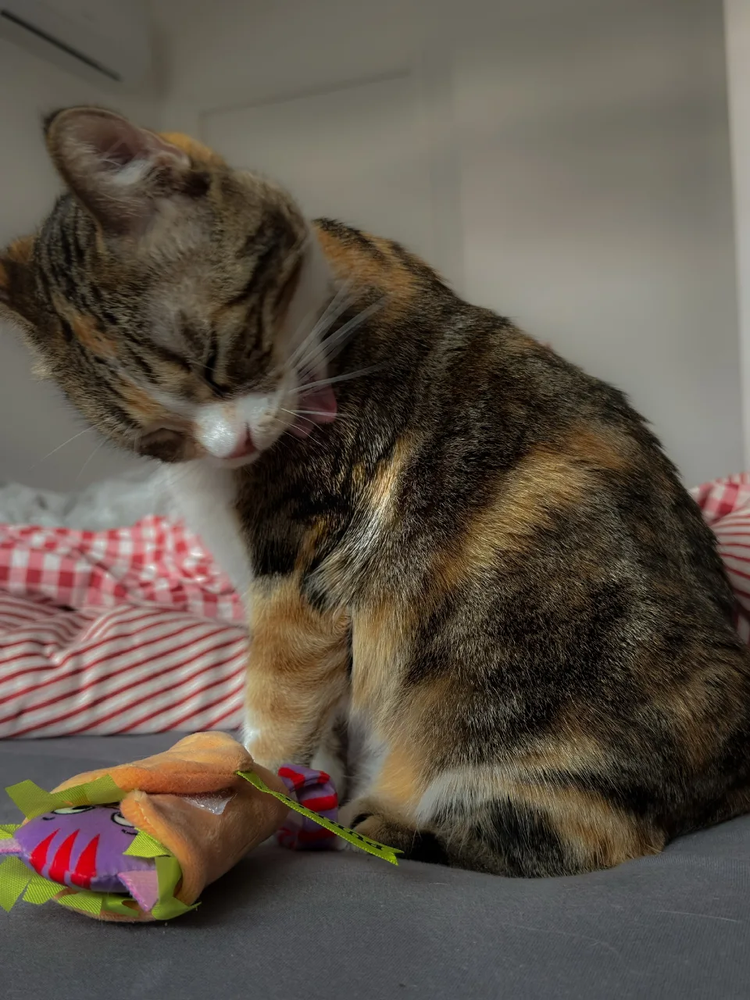

Ce que j'entends souvent en pré-visite (la rencontre avant la garde), à propos de chats un peu vieux ou au poil un peu rêche : « il ne se nettoie pas beaucoup », ou « c'est un chat sale ».
Un chat qui se nettoie peu pose déjà une question. Plus largement, le léchage n'a pas qu'un sens : il entretient le pelage, mais il peut aussi signaler une tension ou une douleur. Pour savoir ce qu'il dit, on regarde aussi ses oreilles et sa queue.
Le même geste, plusieurs sens
Votre chat se lèche la patte sur le canapé, puis vient vous lécher la main. Vu de loin, c'est le même geste. Il ne se lit pas de la même façon.
Pris seul, un léchage ne permet pas de conclure. Ce qui renseigne, c'est le contexte. 5 repères aident à le lire.
5 repères pour lire un léchage
Ce qu'on regarde
Ce que ça vous apprend
Ce que vise sa langue
Son propre pelage, un autre chat, votre main ou un objet : ce sont 4 situations différentes.
La partie du pelage
Une toilette normale passe d'une zone à l'autre. Une seule zone, toujours la même, peut cacher une douleur.
La durée
Quelques minutes, c'est l'entretien. Quelques secondes, d'un coup, ça peut être une tension du moment.
Le moment
Après un repas ou après une dispute, le même léchage ne veut pas dire la même chose.
Ses oreilles, sa queue
Avec sa posture et l'attitude de l'autre chat, c'est souvent là qu'est la réponse.
« Il passe sa vie à se laver »
Vous avez l'impression que votre chat passe sa vie à se laver. Des chercheurs ont fait le compte. Ils ont suivi des chats de compagnie avec un petit capteur de mouvements, jour et nuit. La toilette leur prend en moyenne 1 h 20 par jour, soit un peu plus de 5 % du temps. Ça paraît long, mais ce n'est pas toute leur vie.1
Les jeunes chats font un peu plus leur toilette que les plus âgés. Le climat compte aussi : chez 7 chats suivis 13 semaines réparties sur une année, la toilette baissait quand la chaleur, l'humidité et le vent montaient, et culminait en automne.2
Une séance dure quelques minutes, 5 environ dans des vidéos filmées par les familles, et touche presque toujours plusieurs zones du corps.3 Il n'y a pas d'ordre fixe : le chat ne part pas forcément de la tête pour finir par la queue. Il passe le plus souvent d'une zone à la zone voisine.4
Sa langue est faite pour ça. Elle est couverte de petites pointes, les papilles. Creuses, elles se remplissent de salive et la déposent jusqu'à la racine des poils.5

Une toilette sur le vif : la langue passe sur l'épaule.
Un chat qui cesse de faire sa toilette, ça se voit à son poil.
« Mon chat est sale »
Un chat n'est pas sale par défaut. Il se nettoie tout seul, chaque jour.
Quand il fait moins sa toilette, je le reconnais à son poil : rêche, avec des pellicules, parfois gras.
Pourquoi fait-il moins sa toilette ? Souvent, il y a une raison de santé derrière : une douleur, une gêne. Ça peut être l'arthrose, les dents, et d'autres choses.
L'âge et l'arthrose
Chez les chats âgés, faire moins sa toilette est fréquent. Au Royaume-Uni, des familles ont décrit ce qui avait changé chez leur chat de plus de 11 ans. Plus d'un chat sur trois se toilettait moins qu'avant. Pour les auteurs, la baisse vient très probablement de dents qui font mal, de l'arthrose, du vieillissement du cerveau ou d'un problème de thyroïde.6
Parmi ces causes, l'arthrose fait mal et raidit les articulations. Les vétérinaires citent le pelage négligé parmi ses signes. Ils recommandent aussi d'aider en douceur un chat qui n'arrive plus à se toiletter à cause de la douleur.7 Pour des experts de la douleur féline, ne plus faire sa toilette suffit même à penser qu'un chat a mal.8
Une chatte de 20 ans et demi que je gardais avait de l'arthrose. À chaque visite, je lui faisais un brossage très délicat, pour enlever les poils morts, et pour qu'elle se sente plus propre.
Le poids
Un chat trop gros a du mal à faire sa toilette. Une revue sur l'obésité du chat l'écrit : une forte corpulence empêche de bien se toiletter.9
Pendant mes gardes, il y a eu des chats qui n'arrivaient pas à se lécher, surtout au-dessus de la queue. C'est la zone la plus difficile à atteindre, et souvent, ce sont des chats obèses.
À ces chats-là, je passais un coup de brosse à cet endroit, à chaque visite. Parfois, je conseillais aussi un peu de mousse lavante, pour nettoyer les zones qu'ils n'atteignaient plus.
La bouche
Une dent ou une gencive qui fait mal, et le chat fait moins sa toilette. Son poil devient négligé : les vétérinaires le citent parmi les signes d'une douleur de la bouche.7
La gingivostomatite chronique est l'une de ces maladies : la bouche reste enflammée, et c'est douloureux. On retrouve plus souvent le calicivirus chez les chats qui en souffrent. Le rôle exact du virus dans cette maladie n'est pas encore clair.10
Le stress
Le stress change aussi la toilette, dans un sens ou dans l'autre. Chez un chat stressé, elle augmente le plus souvent, mais elle peut aussi baisser.11
Dans tous les cas, le vétérinaire
Un chat qui fait vraiment moins sa toilette, dont le poil devient rêche, avec des pellicules ou gras : c'est une bonne raison de le montrer au vétérinaire.
Vous ne voyez pas toujours la cause. Dans une étude américaine, des chats de 12 ans et plus, déclarés en bonne santé par leur famille, ont été examinés et testés. Tous présentaient une anomalie, le plus souvent aux dents. Beaucoup avaient aussi un problème d'articulations ou d'os, que les déplacements décrits à la maison ne laissaient pas deviner.12
Pour moi, la règle est la même que pour un chat qui se lèche trop : d'abord le vétérinaire, ensuite le comportement.
Ils se lèchent, puis ils se battent
Jusqu'ici, il n'y avait qu'un chat. À 2, le léchage devient aussi une affaire de relation. Vous connaissez la scène : l'un lèche tranquillement la tête de l'autre, puis le coup de patte part.
Dans les foyers où il y a plusieurs chats, je les vois souvent se lécher l'un l'autre. C'est ce qu'on appelle la toilette mutuelle, ou allogrooming. Ça peut être une marque de proximité. Ou alors, c'est qu'ils veulent se battre.
Une équipe de l'université de Gand l'a étudié. Des familles ont filmé leurs 2 chats en train de se lécher, à la maison. Le même léchage apparaît dans 2 situations opposées : quand les chats sont liés, et quand ils sont en tension.13
Lien ou tension, ce qui les distingue
On regarde
Plutôt du lien
Plutôt de la tension
Leur position
Côte à côte, assis ou couchés de la même façon
L'un penché au-dessus de l'autre
Pendant
Ils restent blottis un long moment
Les oreilles du chat léché tournent vers l'arrière. L'un des deux se lèche les babines ou secoue la tête
Après
Parfois une lutte pour jouer
Un coup de patte, une morsure
Pour trancher entre lien et tension, regardez d'abord leur position : un chat penché au-dessus de l'autre est, pour les auteurs, un signe assez sûr de tension. Le léchage seul ne dit rien : deux chats qui se lèchent ne s'aiment pas forcément.13
Ce léchage est rarement réciproque : dans ces vidéos, 13 duos sur 53 seulement se léchaient dans les deux sens. Les chats n'ont pas non plus besoin d'avoir grandi ensemble : des chats sans lien de famille, réunis après l'âge de 3 mois, se léchaient autant que les autres.13
Reste l'endroit : la langue ne va pas aux mêmes zones sur soi et sur l'autre. Sur lui-même, le chat nettoie plutôt son corps et ses pattes avant ; sur l'autre, presque toujours la tête et le cou.
Où va la langue, sur soi et sur l'autre
Part des séquences de léchage qui touchent chaque zone
La tête et le cou
Sur lui-même15,7 %
Sur l'autre87,1 %
Le corps
Sur lui-même60,2 %
Sur l'autre16,6 %
Les pattes avant
Sur lui-même42,2 %
Sur l'autre6,7 %
Le chat fait sa propre toiletteIl nettoie l'autre chat
Une séquence peut toucher plusieurs zones : les parts ne s'additionnent pas. Vidéos tournées dans des foyers de 2 chats.13
Ça laisse penser qu'ils se toilettent l'un l'autre là où ils n'arrivent pas seuls, mais personne ne l'a vérifié. Lécher l'autre, c'est aussi lui laisser de sa salive, et pour certaines maladies, ça compte.
Quand il vous lèche la main
Il vous lèche la main pendant une caresse, ou le visage au réveil. Vous vous demandez si c'est normal, et ce que ça veut dire.
Ça n'a rien de rare. Dans une enquête en ligne menée en Autriche et à Hong Kong, près d'une personne sur trois qui a un chat range le léchage parmi les gestes habituels de son chat envers elle.15
Pour D. Warren-Cummings, de l'association britannique Cats Protection, ça peut être trois choses : de l'affection, une façon de réclamer une caresse ou une friandise, ou de l'anxiété.16
Autre lecture : la toilette entre chats. Entre eux, les chats se lèchent surtout la tête et le cou, et des spécialistes du comportement en ont tiré une idée : caresser la tête d'un chat, ce serait le toiletter là où les chats se toilettent entre eux.17 Ça colle avec ce qu'ils préfèrent : la plupart des chats sociables aiment être caressés à la base des oreilles, sur les joues et sous le menton.18
Oreilles, cheveux, pieds : pourquoi là ?
Votre chat a peut-être ses zones préférées sur vous : les oreilles, les cheveux, les pieds. Tous les chats ne le font pas, mais certains y reviennent sans cesse. Des personnes racontent que leur chat leur lèche les cheveux après la piscine, quand ils sentent le chlore. Pour les pieds, certains sont un peu fétichistes sur les bords.
Que pensent les spécialistes ? Plusieurs lectures existent. Pour Crowell-Davis et ses collègues, les chats transposent sur les humains leurs comportements sociaux entre chats.17 Pour Bradshaw, se frotter à nos jambes et chercher à nous lécher les mains ressemblent à ce que font les chats entre eux.19 D. Warren-Cummings cite aussi le goût de la peau : une crème, un reste de nourriture.16 Aucune de ces lectures n'a encore été testée.
Votre chat vous trouve-t-il sale ? Rien ne l'indique : même entre chats, personne n'a mesuré si le léchage nettoie, et les chercheurs de Gand rangent la fonction d'hygiène parmi les hypothèses.13
Il lèche la main, puis la mordille
Il vous lèche la main, puis la mordille. D. Warren-Cummings décrit 2 cas : le chat excité par le jeu, chez qui l'instinct de chasse prend le dessus, et le chat gêné ou stressé par la caresse. Pour le premier, un jouet à portée de main permet de le rediriger.16 Dans les 2 cas, regardez son corps. Pour les spécialistes des caresses, 6 signes disent qu'il a besoin d'une pause :18
il tourne la tête d'un coup vers votre main ;
ses oreilles se couchent ou pivotent vers l'arrière ;
la peau de son dos frissonne ;
sa queue fouette ;
il se met soudain à se lécher, quelques secondes ;
il se lèche le nez.
Ces signes viennent de spécialistes et n'ont pas été mesurés un par un, mais suivre leurs conseils a changé les choses dans un refuge : les chats caressés de cette façon se montraient moins agressifs.18 Les gestes qui vont avec sont dans les 3 règles des caresses.
La bouche du chat abrite des bactéries qui peuvent infecter une plaie. Pour une personne en bonne santé, le risque est faible.20 Un chat énervé peut mordre. S'il vous mord, lavez la plaie à l'eau et au savon, puis désinfectez.20 Un chat qui vient lécher une plaie ouverte, c'est rare, mais si ça arrive, lavez et désinfectez de la même façon. Ne le laissez pas non plus lécher le visage d'un jeune enfant ou d'une personne fragile, et lavez la zone léchée.21
Pour lui, une question de toxicité
Certains chats adorent lécher les cosmétiques, et ça, on l'empêche absolument. Ce qui est documenté, ce sont les médicaments qu'on s'applique sur la peau. Pour l'ASPCA, association américaine de protection animale, un seul coup de langue de chat peut être mortel avec le minoxidil, un traitement contre la chute de cheveux. Un gel anti-inflammatoire au diclofénac est aussi dangereux pour lui. Une petite exposition suffit à provoquer des signes graves, par exemple un chat qui lèche la peau de la personne juste après l'application.22
Pour les crèmes et les parfums ordinaires, les études manquent, mais D. Warren-Cummings conseille d'éviter qu'un chat lèche une crème très parfumée.16
Pendant mes gardes, je ne mets ni parfum, ni crème hydratante, pas même de déodorant, et tant pis pour les personnes que je croise ce jour-là. Je préfère exposer les chats le moins possible à des odeurs fortes ou inconnues, et qu'ils apprennent mon odeur à moi. En rentrant, je prends une douche complète, et c'est là que je mets ma crème.
« Il se lèche le derrière, et alors ? »
Votre chat s'installe sur le canapé, lève une patte arrière et se lèche le derrière. Devant vous, sans la moindre gêne. Puis il vient vous dire bonjour.
Rien d'anormal. Pour lui, le derrière est une zone de toilette comme une autre. Il l'enchaîne même volontiers avec la base de la queue, sa voisine.4
Sa mère s'en charge dès la naissance : un chaton a besoin d'être stimulé pour uriner et déféquer, et elle lui lèche cette zone pour l'y aider.23,24 Entre adultes, on l'a observé lors d'une naissance : une chatte qui n'est pas en train de mettre bas nettoie le derrière de celle qui accouche.17
Le derrière n'a aucun tabou pour un chat. C'est nous qui en avons.
Chez les autres chats
Lécher le derrière de l'autre, c'est rare. Dans les vidéos de foyers de 2 chats, un seul léchage sur 163 visait cette zone chez l'autre.13
Avec vous, c'est autre chose : le derrière que votre chat vous met sous le nez, queue levée, ressemble à un salut. Entre chats, la queue verticale à l'approche signale des intentions amicales.17 Envers une personne, ça n'a jamais été mesuré.
Quand ça devient trop
S'il y revient sans cesse, c'est le vétérinaire d'abord, comme pour le reste. Une douleur urinaire, comme une cystite, peut se voir à un derrière trop léché : les vétérinaires citent le surtoilettage du ventre, de la zone sous la queue et des pattes arrière.25
Chez le chien, les glandes anales sont une cause connue : il se traîne les fesses sur le tapis, vous connaissez. Chez le chat, c'est rare : 0,4 % des chats selon des vétérinaires interrogés, contre 15,7 % des chiens. Les signes n'ont pas été décrits chez lui : on les suppose proches de ceux du chien, léchage de la zone compris.26
Votre chat vient de se faire chasser du canapé par l'autre. Il s'assoit un peu plus loin, et se lèche le flanc quelques secondes.
Une revue vétérinaire décrit une toilette de frustration, qui ressemble à cette scène : souvent brève, intense, quelques secondes, sur une ou quelques zones comme l'épaule ou la base de la queue. Quand le chat se sent bien, la toilette semble plus rythmée, dure plusieurs minutes et couvre de nombreuses zones du corps.27 La revue précise que ces observations ne sont pas encore appuyées par des mesures.
Côté mesures, un chercheur a observé une colonie de chats après leurs disputes. Les chats attaqués se léchaient, se grattaient et secouaient la tête plus que d'habitude, pendant la première minute. Puis ça retombait. Il y voit des marqueurs de stress aigu.28
On lit souvent qu'un chat se lèche pour se calmer. Chez le chat, personne ne l'a montré : ce léchage accompagne le stress du moment, et s'il l'apaise, on l'ignore.
Le nez et les babines
Votre chat se passe la langue sur les babines. Selon le moment, ça ne veut pas dire la même chose. Des chercheurs finlandais ont filmé des chats chez eux, devant leur aliment préféré, et face à un aliment qu'ils ne mangent presque jamais, comme un légume.29
Après un repas qu'il aime, le chat se lèche les babines, lentement, des deux côtés, et parfois le nez aussi. S'il refuse ce qu'on lui propose, il se passe vite la langue sur le nez, sans avoir rien mangé.
Les auteurs le reconnaissent : les deux gestes se distinguent mal, même en vidéo. Le même coup de langue se retrouve dans d'autres situations : des spécialistes l'ont observé chez des chats frustrés.27
Il se lèche et mâchonne de façon exagérée, se frotte la bouche avec la patte
Une douleur de la bouche est possible. Le vétérinaire.31
Il se lèche les lèvres par salves, le regard fixe, sans réagir, en bavant
Une crise neurologique est possible. Le vétérinaire.32
Aucun de ces gestes, pris seul, ne permet de conclure. C'est ce qui l'accompagne qui oriente, comme la salive ou la patte qui frotte la bouche.
Il se lèche trop, le vétérinaire d'abord
Votre chat a des plaques sans poils sur le ventre ou l'intérieur des cuisses, et il ne s'arrête plus de se lécher. On pense vite au stress.
Pour moi, c'est toujours le vétérinaire d'abord. On ne commence pas par étudier le comportement du chat : c'est souvent une maladie de peau, ou un autre problème de santé, qui est à l'origine.
Ça se vérifie. Des chats envoyés pour une perte de poils qu'on croyait due au stress ont été examinés à fond. Sur 21 chats, 19 avaient une cause médicale, seule ou mêlée à un facteur psychologique, le plus souvent une allergie alimentaire. Seuls 2 avaient un problème purement psychologique.33
Une allergie ne se voit pas toujours. Un chat peut se lécher jusqu'à perdre ses poils sans aucun bouton sur la peau. Une peau sans lésion n'écarte donc pas une cause médicale.33
Ce que le vétérinaire cherche, en gros :
une démangeaison : une allergie, alimentaire ou à l'environnement, ou des parasites, dont un petit acarien ;33,34
une maladie de peau comme le granulome éosinophilique, une réaction inflammatoire dont les causes courantes sont allergiques ;35
une douleur, quand le chat revient toujours sur la même zone.
Si plusieurs chats de la maison se grattent ou se lèchent, pensez à une cause qui se transmet. Le petit acarien Demodex gatoi, par exemple, passe d'un chat à l'autre.36
Ce que change un diagnostic
J'ai gardé un chat qui avait un granulome éosinophilique. Il était traité, et sa famille était extrêmement attentive à sa santé. Il avait quand même des moments où il perdait beaucoup de poils, où il se léchait excessivement, très certainement parce que ça le grattait.
Ce n'était pas tous les jours. Mais quand ça arrivait, j'y faisais attention : ça pouvait vouloir dire une aggravation, une petite crise.
C'est ce que change un diagnostic. On sait, on peut traiter. On vit avec, mais au moins on sait, et ce léchage-là n'a plus rien d'inhabituel.
Parfois, on apprend que son chat a une maladie qui n'engage pas sa vie, mais qui est embêtante, avec des symptômes à traiter. N'hésitez pas à demander de l'aide, et pas seulement au vétérinaire ou à un comportementaliste : à votre entourage aussi. Que toute la famille apprenne à donner le traitement, et à repérer les signes avant-coureurs d'une crise. Ça vaut pour n'importe quelle maladie du chat : quand une seule personne s'en occupe, toujours, elle finit par s'épuiser. Souvent, c'est l'humain qui a plus de mal à le vivre que le chat.
L'alopécie dite psychogène, la perte de poils qui vient du stress, existe. C'est un diagnostic que pose le vétérinaire, une fois tout le reste écarté. Seule, sans cause médicale, elle est rare.33
Une zone, toujours la même
Un chat qui revient sans cesse sur la même zone, une patte ou un flanc par exemple, peut avoir mal à cet endroit. Pour les experts de la douleur, lécher une région précise du corps est même un signe suffisant.8 Une opération passée peut rester douloureuse : le léchage de la cicatrice fait partie des signes.7
Le ventre, la zone sous la queue et les pattes arrière léchés à l'excès font penser à une douleur urinaire, comme une cystite. Surveillez son bac en même temps. Un mâle qui fait des allers-retours à la litière sans rien produire doit voir un vétérinaire tout de suite, de jour comme de nuit. Ces allers-retours se prennent facilement pour de la constipation.25
Le sol, le plastique, le tissu
Le léchage ne s'arrête pas toujours au poil et à la peau : il y a aussi le sol, le plastique, le tissu. Votre chat mâchonne les sacs en plastique, ou tète son plaid. Chez le jeune chat, mâchonner ce qui ne se mange pas est fréquent. Dans une grande étude britannique qui suit des chats depuis qu'ils sont chatons, plus de quatre sur dix le faisaient vers 6 mois. Plus de la moitié de ceux-là avaient arrêté vers 18 mois.37
Quand ça dure, ou qu'il avale ce qu'il mâchonne, parlez-en au vétérinaire. Une piste existe : des chats qui mangeaient du tissu ont été examinés à fond, et tous avaient un trouble digestif. L'étude ne les comparait pas à d'autres chats, donc la question reste ouverte.38 Un bout de tissu ou de plastique avalé peut aussi boucher l'intestin.39
Autre idée qui circule : un chat qui lèche le béton ou les murs manquerait de fer. Aucune étude ne le montre chez le chat.
3 idées reçues sur le léchage
Ce qu'on entend, et ce que disent les études
Ce qu'on entend
Ce que disent les études
« C'est un bisou »
Pas démontré. L'association Cats Protection y voit de l'affection, une demande d'attention ou de l'anxiété.16
« Ils se lèchent pour avoir la même odeur »
Pas démontré. On sait seulement que le léchage laisse un peu de la salive de l'un sur le poil de l'autre.40
« Sa salive désinfecte »
Faux. Sa bouche abrite des bactéries qui peuvent infecter une plaie.20
Ce que vous voyez, ce que ça veut dire
Un léchage se lit toujours avec ce qui l'entoure.
Le léchage, en un tableau
Ce que vous voyez
Ce que ça peut vouloir dire
Quelques minutes de toilette, sur plusieurs zones, au calme
L'entretien normal.
Quelques secondes de toilette, d'un coup, pendant une caresse ou après une dispute
Peut-être une tension du moment. Pendant une caresse, faites une pause.
Deux chats blottis, qui se lèchent la tête
Plutôt du lien.
Un chat penché sur l'autre, les oreilles du léché vers l'arrière
Plutôt de la tension. Un coup de patte peut suivre.
Il vous lèche la main
Affection, demande d'attention ou anxiété, selon Cats Protection. Ne le laissez pas lécher une plaie.
Un chat qui fait moins sa toilette, au poil rêche ou gras
Souvent une douleur ou une gêne, comme l'arthrose. Le vétérinaire d'abord, puis une aide en douceur.
Des plaques sans poils, des poils cassés, même sans boutons
Souvent une démangeaison. Le vétérinaire.
Une seule zone léchée sans arrêt
Une douleur possible. Le vétérinaire.
Le ventre, la zone sous la queue, les pattes arrière léchés à l'excès
Une douleur urinaire possible. Le vétérinaire.
Un mâle qui fait des allers-retours à la litière sans rien produire
Le vétérinaire tout de suite, de jour comme de nuit.
Il mâchonne du tissu, du plastique
Fréquent chez le jeune. S'il avale, le vétérinaire.
Le chat « sale » de la pré-visite a souvent une raison de ne plus faire sa toilette. Le vétérinaire la cherche. En attendant, un coup de brosse très doux peut l'aider, si le chat l'accepte.
🐾 ComportementLien affilié
La mousse pour les zones qu'il n'atteint plus
Ma vétérinaire me l'a conseillée pour mon chat, décédé depuis, qui avait de l'arthrose et n'arrivait plus à atteindre son arrière-train. On le nettoyait régulièrement avec cette mousse, surtout au bas du dos.
C'est une mousse sans rinçage : on la masse, puis on brosse. Dans mon expérience, ça fait du bien au chat et ça améliore son poil, en attendant mieux. Elle ne remplace pas un toilettage complet.
Elle existe pour les chats comme pour les chiens. Le fabricant la présente comme un soin anti‑odeur et séborégulateur, contre les pellicules.
Smit M., Corner-Thomas R.A., Draganova I., Andrews C.J. et Thomas D.G., How Lazy Are Pet Cats Really ? Using Machine Learning and Accelerometry to Get a Glimpse into the Behaviour of Privately Owned Cats in Different Households, Sensors, 2024. Article intégral, en anglais, nouvelle fenêtre
Smit M., Andrews C.J., Draganova I., Corner-Thomas R.A. et Thomas D.G., Longitudinal Study on the Effect of Season and Weather on the Behaviour of Domestic Cats (Felis catus), Animals, 2025. Article intégral, en anglais, nouvelle fenêtre
Guillon M., Naudin L., Cochet-Faivre N., Titeux E. et Gilbert C., Exploring Normal to Abnormal Variations of Grooming Behaviours in Cats, Veterinary Dermatology, 2026. Article intégral, en anglais, nouvelle fenêtre
Hock A. et Schmidt M., Decoding diversity : Are there patterns in the organization of grooming movements in domestic cats ?, Journal of the Experimental Analysis of Behavior, 2026. Article intégral, en anglais, nouvelle fenêtre
Sordo L., Breheny C., Halls V. et coll., Prevalence of Disease and Age-Related Behavioural Changes in Cats : Past and Present, Veterinary Sciences, 2020. Article intégral, en anglais, nouvelle fenêtre
Taylor S., Gruen M.E., KuKanich K.S. et coll., 2024 ISFM and AAFP consensus guidelines on the long-term use of NSAIDs in cats, Journal of Feline Medicine and Surgery, 2024. Recommandations, en anglais, nouvelle fenêtre
Wang H., Wang W., Zhang Y. et coll., From pathogenesis to prevention : an update on the management of obesity and its associated comorbidities in cats, Frontiers in Veterinary Science, 2026. Article intégral, en anglais, nouvelle fenêtre
Oláh Á.A., Dudás-Györki Z., Dunay I.R. et Dunay M.P., Alterations in the feline oral microbiome in common oral diseases - A comprehensive review, European Journal of Microbiology and Immunology, 2026. Article intégral, en anglais, nouvelle fenêtre
Amat M., Camps T. et Manteca X., Stress in owned cats : behavioural changes and welfare implications, Journal of Feline Medicine and Surgery, 2016. Article intégral, en anglais, nouvelle fenêtre
Herrera K., Nichelason A., Snyder Z. et coll., Clinically important abnormalities are common in senior cats perceived to be healthy by owners, Journal of the American Veterinary Medical Association, 2026. Page de l'éditeur, en anglais, nouvelle fenêtre
Van Belle M.J.R., Moons C.P.H., Mills D.S., Broeckx B.J.G., Tuyttens F.A.M. et Gajdoš Kmecová N., Unravelling feline social dynamics : A video-based observational study on allogrooming in domestic cats, Applied Animal Behaviour Science, 2026. Article intégral, en anglais, nouvelle fenêtre
Little S., Levy J., Hartmann K. et coll., 2020 AAFP feline retrovirus testing and management guidelines, Journal of Feline Medicine and Surgery, 2020. Recommandations, en anglais, nouvelle fenêtre
Cham C., Kaufmann V. et Schirmer A., Stroking and Leaning : The Give and Take of Social Touch Between Humans and Their Pets, Anthrozoös, 2025. Article intégral, en anglais, nouvelle fenêtre
Warren-Cummings D., Cats Protection, Why does my cat lick me ?, article cosigné, publié sur le site de l'assureur Petplan. Page web, en anglais, nouvelle fenêtre
Crowell-Davis S.L., Curtis T.M. et Knowles R.J., Social organization in the cat : a modern understanding, Journal of Feline Medicine and Surgery, 2004. Article intégral, en anglais, nouvelle fenêtre
Haywood C., Ripari L., Puzzo J., Foreman-Worsley R. et Finka L.R., Providing Humans With Practical, Best Practice Handling Guidelines During Human-Cat Interactions Increases Cats' Affiliative Behaviour and Reduces Aggression and Signs of Conflict, Frontiers in Veterinary Science, 2021. Article intégral, en anglais, nouvelle fenêtre
Stull J.W., Brophy J. et Weese J.S., Reducing the risk of pet-associated zoonotic infections, Canadian Medical Association Journal, 2015. Article intégral, en anglais, nouvelle fenêtre
Veronesi M.C. et Fusi J., Feline neonatology : from birth to commencement of weaning, what to know for successful management, Journal of Feline Medicine and Surgery, 2022. Article intégral, en anglais, nouvelle fenêtre
Thor K.B., Blais D.P. et de Groat W.C., Behavioral analysis of the postnatal development of micturition in kittens, Developmental Brain Research, 1989. Page de l'éditeur, en anglais, nouvelle fenêtre
Taylor S., Boysen S., Buffington T. et coll., 2025 iCatCare consensus guidelines on the diagnosis and management of lower urinary tract diseases in cats, Journal of Feline Medicine and Surgery, 2025. Recommandations, en anglais, nouvelle fenêtre
Corbee R.J., Woldring H.H., van den Eijnde L.M. et Wouters E.G.H., A Cross-Sectional Study on Canine and Feline Anal Sac Disease, Animals, 2021. Article intégral, en anglais, nouvelle fenêtre
Ellis S.L.H., Recognising and assessing feline emotions during the consultation : history, body language and behaviour, Journal of Feline Medicine and Surgery, 2018. Article intégral, en anglais, nouvelle fenêtre
van den Bos R., Post-conflict stress-response in confined group-living cats (Felis silvestris catus), Applied Animal Behaviour Science, 1998. Page de l'éditeur, en anglais, nouvelle fenêtre
Savolainen S., Telkänranta H., Junnila J. et coll., A novel set of behavioural indicators for measuring perception of food by cats, The Veterinary Journal, 2016, repris dans la thèse de S. Savolainen, université d'Helsinki, 2020. Ces travaux, qui visent à faire accepter des médicaments aux chats, ont reçu des fonds de fabricants de médicaments vétérinaires. Page de l'éditeur, en anglais, nouvelle fenêtre
Taylor S., Chan D.L., Villaverde C. et coll., 2022 ISFM Consensus Guidelines on Management of the Inappetent Hospitalised Cat, Journal of Feline Medicine and Surgery, 2022. Recommandations, en anglais, nouvelle fenêtre
Rusbridge C., Heath S., Gunn-Moore D.A. et coll., Feline orofacial pain syndrome (FOPS) : A retrospective study of 113 cases, Journal of Feline Medicine and Surgery, 2010. Article intégral, en anglais, nouvelle fenêtre
Pakozdy A., Gruber A., Kneissl S. et coll., Complex partial cluster seizures in cats with orofacial involvement, Journal of Feline Medicine and Surgery, 2011. Article intégral, en anglais, nouvelle fenêtre
Waisglass S.E., Landsberg G.M., Yager J.A. et Hall J.A., Underlying medical conditions in cats with presumptive psychogenic alopecia, Journal of the American Veterinary Medical Association, 2006. Article intégral, en anglais, nouvelle fenêtre
Omelchenko H., Avramenko N., Kulynych S. et coll., Some aspects of the diagnosis and treatment of eosinophilic granuloma in cats, Journal of Veterinary Research, 2023. Article intégral, en anglais, nouvelle fenêtre
Saari S.A., Juuti K.H., Palojärvi J.H. et coll., Demodex gatoi-associated contagious pruritic dermatosis in cats : a report from six households in Finland, Acta Veterinaria Scandinavica, 2009. Article intégral, en anglais, nouvelle fenêtre
Demontigny-Bédard I., Bélanger M.-C., Hélie P. et Frank D., Medical and behavioral evaluation of 8 cats presenting with fabric ingestion : An exploratory pilot study, Canadian Veterinary Journal, 2019. Article intégral, en anglais, nouvelle fenêtre
Grahn R.A., Huang T.I.-T. et Lyons L.A., Impact of allogrooming in domestic cats (Felis silvestris catus) on mitochondrial DNA profiling of shed hairs, The Open Forensic Science Journal, 2013. Article intégral, en anglais, nouvelle fenêtre
Et sinon, je garde des chats.
Chez vous, en Ille-et-Vilaine. Le chat garde ses repères, vous avez de ses nouvelles.